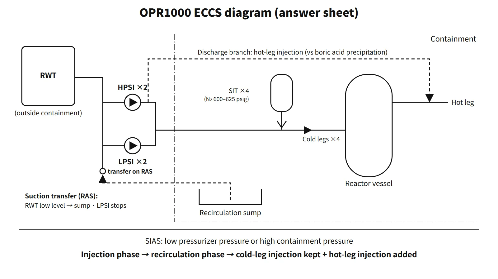

Systems & Equipment · C-SY-008
Emergency Core Cooling System (ECCS) — Passive SITs and Active HPSI and LPSI Sharing Core Cooling Over Time
How passive tanks and active pumps share core cooling by pressure and time after a LOCA, and why hot-leg injection is added hours later.
The emergency core cooling system (ECCS) is the engineered safety feature that, in design-basis accidents such as a loss-of-coolant accident (LOCA), injects borated water into the reactor coolant system (RCS) to cool the core and add negative reactivity, and then removes decay heat over the long term by recirculation after the accident. In a pressurized water reactor, the passive safety injection tanks (SITs), the active high- and low-pressure safety injection pumps (HPSI, LPSI), the water sources (refuelling water tank and sump) and the actuation signals (SIAS, RAS) are treated together as one system.
Principle and mechanism
Functions — not a LOCA-only system
- Inventory makeup and core cooling: replaces the coolant lost in a LOCA to recover the core and lower cladding temperature.
- Negative reactivity: highly borated water (OPR1000 RWT and SITs 4,000–4,400 ppm) prevents return to criticality in overcooling accidents such as a main steam line break and secures shutdown margin. The negative-reactivity requirement is set mainly by loss of secondary coolant.
- Long-term cooling: when the water source runs out, recirculation from the containment sump keeps removing decay heat.
- Prevention of boric acid precipitation: during long-term cooling, simultaneous hot-leg and cold-leg injection flushes out boric acid concentrating in the core.
The technical specification bases in the KINS textbook list the accidents covered as LOCA, control element assembly ejection, loss of secondary coolant and steam generator tube rupture (SGTR).
OPR1000 configuration — passive and active parts
| Component | Number and key values (Yonggwang 3 and 4 textbook) | Function |
|---|---|---|
| Safety injection tank (SIT) | 4, one per cold leg, nitrogen at 600–625 psig | Injects automatically by pressure difference when RCS pressure falls below tank pressure (passive). Isolation MOV open during operation with power removed |
| High-pressure safety injection pump (HPSI) | 2, design 815 gpm and 2,850 ft | Small-LOCA makeup, sump recirculation after RAS, hot-leg injection |
| Low-pressure safety injection pump (LPSI) | 2, design 3,850 gpm and 335 ft | High-flow injection in a large LOCA, automatic stop on RAS, also used for shutdown cooling |
| Refuelling water tank (RWT) | Outside containment, at least 20 minutes with all ESF pumps running | Water source for the injection phase |
| Recirculation sump | Lowest point of containment, 0.09-inch screens | Water source for the recirculation phase |
| Trisodium phosphate (TSP) | Baskets on the containment floor | Keeps recirculation water at pH 7 or above → limits iodine volatility and stress corrosion cracking |
One of the four SITs is assumed to spill straight out of the break. The nitrogen volume, water volume and line sizes are set so that the remaining three do the job.
Actuation signals
- SIAS (safety injection actuation signal): low pressurizer pressure or high containment pressure. The HPSI and LPSI pumps start automatically and the injection header isolation valves open. After an automatic start, the pumps are designed not to be stopped by overcurrent relays or the normal stop switch, to prevent an inadvertent stop.
- RAS (recirculation actuation signal): low RWT level. The LPSI pumps stop automatically and the sump isolation valves open automatically. The operator closes the RWT outlet valves. From then on the HPSI and containment spray pumps take water from the sump.
Roles split by pressure
The three means cover different pressure ranges. HPSI injects even at high pressure and handles small LOCAs; the SITs inject large volumes by pressure difference once the RCS falls below their initial nitrogen pressure of 600–625 psig; LPSI delivers high flow at low pressure. In a large LOCA all three overlap. Because they are centrifugal pumps, injection flow increases as RCS pressure falls. Assuming an H = H₀ − kQ² curve through the two textbook operating points (HPSI 815 gpm at 2,850 ft and 1,130 gpm at 1,580 ft) and extrapolating gives shutoff heads of about 1,830 psid for HPSI and about 186 psid for LPSI. These are reference values from an assumed curve and are pump differential pressures, so they must not be used as the upper RCS absolute pressure for injection. Actual values follow each unit's FSAR pump curves. The HPSI shutoff head is chosen so that it can still inject in a small LOCA even if RCS pressure rises to the steam generator relief valve setpoint, so that decay heat can be removed through the steam generators.
![Left: pressure ranges against an RCS pressure axis from 0 to 2,500 psia with normal operation at about 2,250 psia where none can inject; HPSI covers high pressure (small-LOCA makeup and recirculation), the SITs inject below an initial nitrogen pressure of 600 to 625 psig (about 615 to 640 psia), and LPSI delivers high flow at low pressure for large-LOCA refill and reflood. Right: one HPSI pump head-flow curve through the textbook points 815 gpm at 2,850 ft and 1,130 gpm at 1,580 ft, with an assumed curve H = H0 minus kQ squared extrapolated to a shutoff head of about 4,230 ft (about 1,830 psid), not an RCS injection limit; a box gives the LPSI points 3,850 gpm at 335 ft and 4,670 gpm at 290 ft with an extrapolated shutoff head of about 430 ft (186 psid)](../../assets/images/concepts/c-sy-008-emergency-core-cooling-system/fig2-injection-pressure-ladder.webp)
The order in which the ECCS works in a large LOCA
- Rapid depressurization → reactor trip and SIAS (within seconds)
- During blowdown the RCS falls below SIT nitrogen pressure → SIT injection, supporting refill (as it discharges the nitrogen expands and tank pressure also falls)
- HPSI and LPSI inject RWT water into the four cold legs (with loss of offsite power assumed, after the emergency diesel generators start and pick up load)
- Reflood → core quench
- RWT reaches low level → RAS → sump recirculation (HPSI continues, LPSI stops). The RWT capacity criterion is at least 20 minutes with all ESF pumps at design flow; it is not the RAS time itself
- The operator realigns HPSI discharge for simultaneous hot-leg and cold-leg injection (Uljin 3 and 4 analysis example: 2–3 hours after the accident)
- Long-term cooling → transfer to shutdown cooling
![Left: conceptual OPR1000 containment cutaway with a safety injection tank, the RWT outside containment, cold and hot legs, the reactor vessel and the recirculation sump. Right: logarithmic time axis from 1 s to 1 day after a large LOCA showing blowdown, refill, reflood and long-term cooling; SIT injection by pressure difference once RCS pressure falls below the initial nitrogen pressure of 600 to 625 psig; HPSI starting on SIAS and injecting RWT water, then recirculating from the sump; LPSI high flow from the RWT until it stops on RAS; the suction source changing from the RWT to the sump; and the injection point changing from four cold legs to hot plus cold legs at 2 to 3 hours in the Uljin 3 and 4 analysis](../../assets/images/concepts/c-sy-008-emergency-core-cooling-system/fig1-lbloca-eccs-timeline.webp)
Why simultaneous hot-leg injection (hot-leg recirculation)?
With a cold-leg break, water injected into the cold legs boils in the core and leaves as steam. Boric acid does not evaporate, so it accumulates in the core and lower plenum. If the concentration exceeds the solubility limit, boric acid precipitates, blocking flow paths and degrading heat transfer, which threatens the long-term cooling criterion. Injecting into the hot legs as well creates a net flow through the core that flushes the concentrated water out of the break. With a hot-leg break, cold-leg injection alone flushes the core, but because the break location cannot be known in advance, both are injected at the same time. In the OPR1000 the operator opens the hot-leg injection isolation valves on the HPSI discharge (normally closed, no automatic function), and orifices split the flow roughly half and half between the hot and cold legs.
The switchover time is an analysis result. A preliminary boric acid concentration analysis for Uljin 3 and 4 (2009 conference paper) found 2–3 hours and reported that crediting only half of the lower-plenum mixing volume would require an earlier switch. Some US units use 5.5–6 hours. The "about 24 hours" in the 73rd exam question should be read as the premise of the question.
What it means in a plant
OPR1000 and APR1400
| Item | OPR1000 | APR1400 |
|---|---|---|
| Active injection | 2 HPSI + 2 LPSI (two mechanical trains) | 4 SIPs (four mechanical trains, two electrical divisions) |
| Injection point | Cold legs | Direct vessel injection (DVI) |
| Low-pressure high flow | LPSI | SIT fluidic device (automatic switch from high to low flow) |
| Water source | RWT (outside) → sump (RAS) | IRWST (inside), single source, no RAS |
| Hot-side injection | HPSI hot-leg injection | Simultaneous hot-side injection (about 3 hours in the US DC analysis) |
Surveillance during operation
Under the technical specifications in the textbook, all four SITs must be operable in Modes 1, 2 and 3 (pressurizer above 700 psia), and both ECCS trains in Modes 1, 2 and 3 (above 1,700 psia). With one or more trains inoperable, the allowed time is 72 hours. Level and pressure are checked every 12 hours and boron concentration every 31 days.
Regulatory basis
| Basis | Key point |
|---|---|
| Korean technical standard rule (NSSC Rule No. 37), Article 30(1) | Capability to remove heat from the core even on loss of decay heat removal or a LOCA; "shall conform to the acceptance criteria established and notified by the Nuclear Safety and Security Commission" — cladding temperature, limits on oxidation and hydrogen, deformation of fuel and internals not impeding cooling, cooling for as long as decay heat must be removed |
| Same article, (2) | Safety maintained even assuming loss of a single power source and a single failure — redundancy, leak detection, isolation, containment function |
| NSSC Notice No. 2017-23 | The five acceptance criteria (Art. 3) and evaluation methods (Art. 4) |
| 10 CFR 50.46, Appendix K | US acceptance criteria and conservative evaluation models |
| 10 CFR 50 Appendix A, GDC 35, 36 and 37 | ECCS function (with a single failure and with onsite or offsite power alone), inspection, testing |
| GDC 2, 4, 5, 17 and 27 | Natural phenomena, dynamic effects, limits on sharing between units, electric power, combined reactivity control |
Article 1 of the Korean acceptance-criteria notice cites Article 30(1) as its basis. A single failure means "a postulated single failure plus the failures resulting from it", and in ECCS analysis the loss of one emergency diesel generator (loss of one train) is the typical worst single failure.
What has changed since the questions were set: at the time of the 73rd and 76th exams (around 2004–2005) the Korean criteria were a Ministry of Science and Technology notice; the current one is NSSC Notice No. 2017-23. The numerical acceptance criteria are the same. The current technical standard rule is NSSC Rule No. 37 (30 March 2026), and the emergency core cooling system is still Article 30. In the United States, 50.46c was withdrawn in 2024, and the current 50.46(b) applies.
Easily confused pairs
| ECCS | Decay heat removal (shutdown cooling) system | |
|---|---|---|
| Situation | Accidents (LOCA, MSLB, etc.) | Normal cooldown and shutdown |
| Pressure | High to low, during the accident | Low (OPR1000 entry at about 400 psia or below) |
| Article | Korean technical standard rule, Article 30 | Same rule, Article 29 |
| Equipment | SITs, HPSI, LPSI | Shutdown cooling pumps (in the OPR1000 the LPSI pumps double as these) |
| Injection phase | Recirculation phase | |
|---|---|---|
| Water source | RWT | Containment sump |
| Pumps running | HPSI, LPSI | HPSI (+ spray pumps) |
| Transition | Starts on SIAS | RAS (low RWT level) |
Key points at a glance
- Definition: engineered safety feature that injects borated water into the RCS in a LOCA and similar accidents to provide core cooling, negative reactivity and long-term cooling.
- Functions: (1) inventory makeup and core cooling; (2) boron negative reactivity (MSLB); (3) long-term cooling by recirculation; (4) prevention of boric acid precipitation by simultaneous hot-leg injection.
- Passive part: four SITs (N₂ 600–625 psig, cold legs, one assumed lost).
- Active part: two HPSI (high pressure, small LOCA, recirculation), two LPSI (low-pressure high flow, stop on RAS).
- Water sources: RWT (outside, at least 20 minutes) → RAS → sump (TSP, pH ≥ 7).
- Signal: SIAS = low pressurizer pressure or high containment pressure.
- Design basis: Korean technical standard rule Article 30(1) (notified acceptance criteria) and (2) (single failure, redundancy, isolation); GDC 35–37; 50.46.
- APR1400: four SIPs, DVI, SIT fluidic device (no LPSI), IRWST (no RAS).

This is a model answer, not an official solution. It reflects the criteria current as of 2026.
Exam relevance
The ECCS has appeared four times in the Korean Professional Engineer (Nuclear Power) exam: 73rd exam, session 4, Q4 (why the ECCS switches to hot-leg recirculation about 24 hours after safety injection starts); 76th exam, session 4, Q5 (design basis of the ECCS installed to mitigate core damage); 2024 exam, session 2, Q4 (ECCS performance design basis: acceptance criteria, evaluation methods, and the main OPR1000 ECCS components and their functions); and 2025 exam, session 1, Q1 (functions of the PWR ECCS). For the 2025 short answer, items 1–4 of the key points are enough. In the 2024 question, parts (a) and (b) call for the five acceptance criteria and the evaluation methods of the ECCS performance standard, and part (c) can be answered with the configuration table above. For the 76th exam question, do not stop at the acceptance criteria: add the single-failure and power-supply assumptions of Article 30(2) and GDC 35.